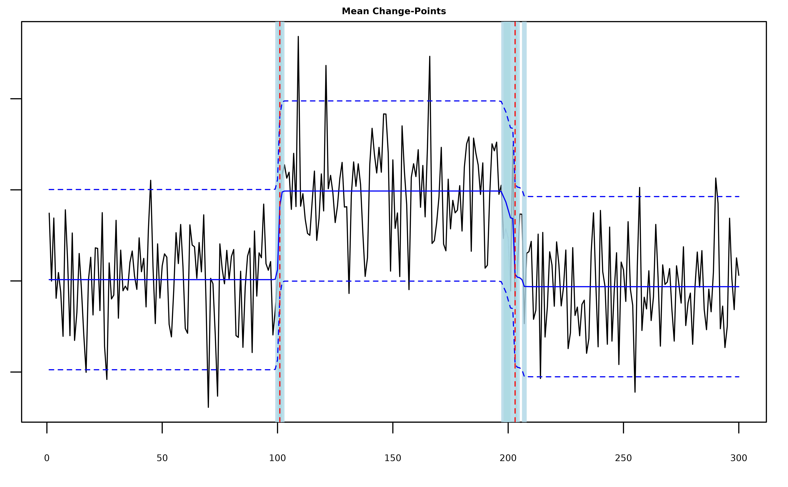
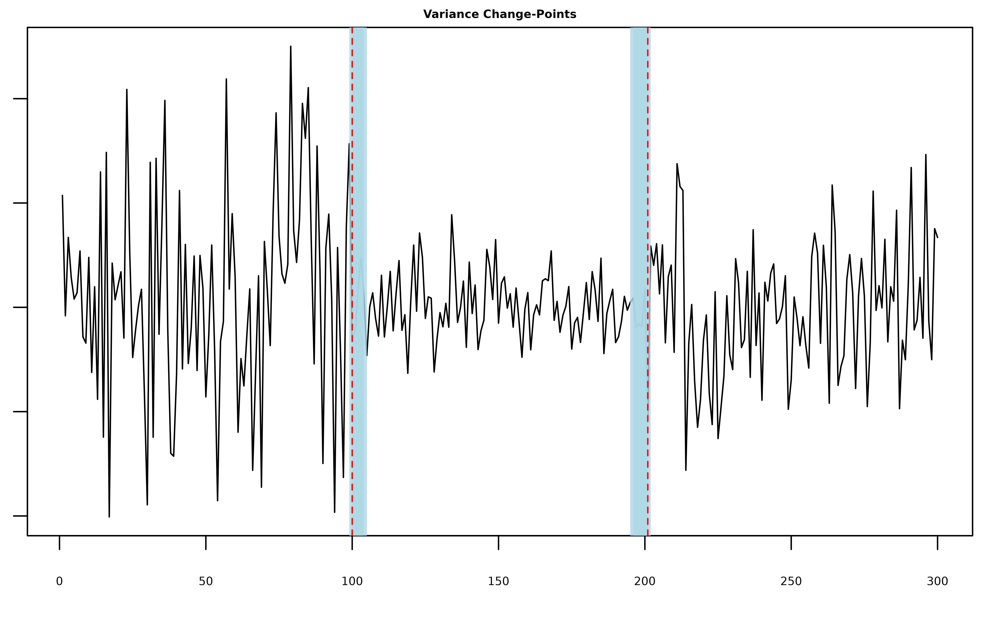
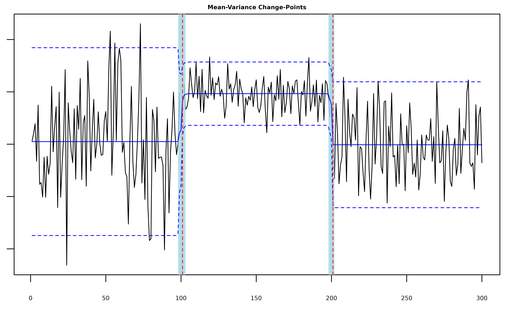
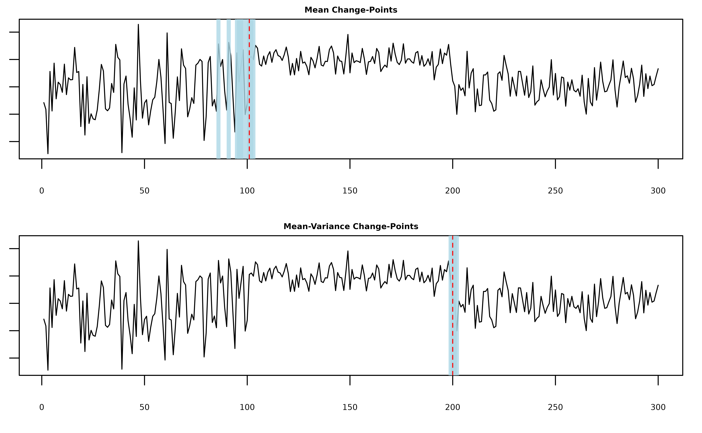
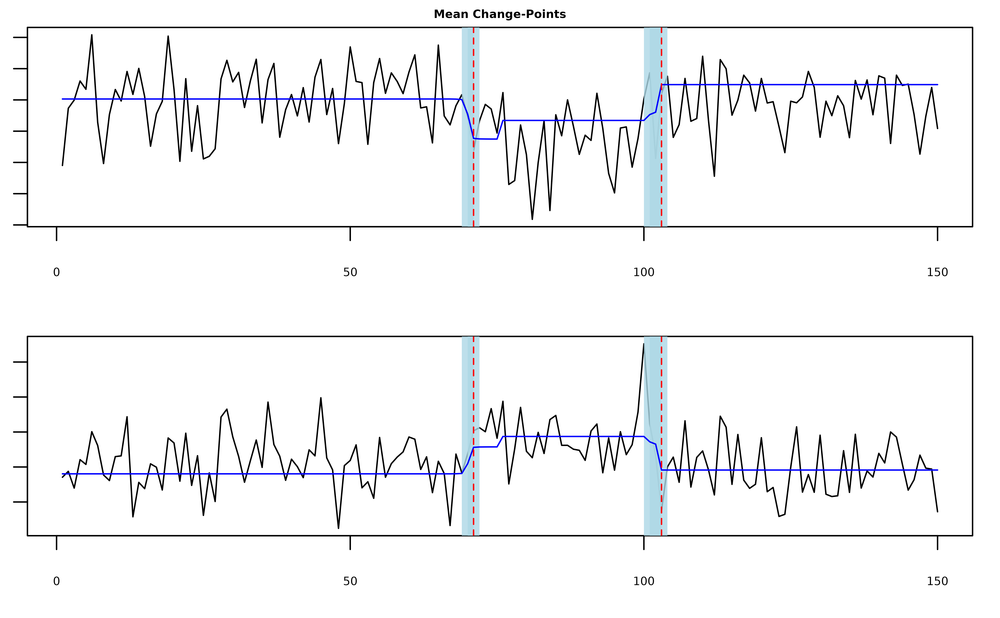
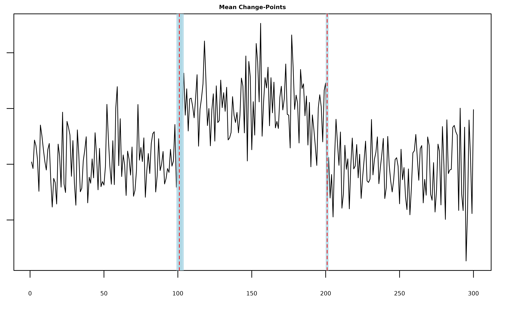
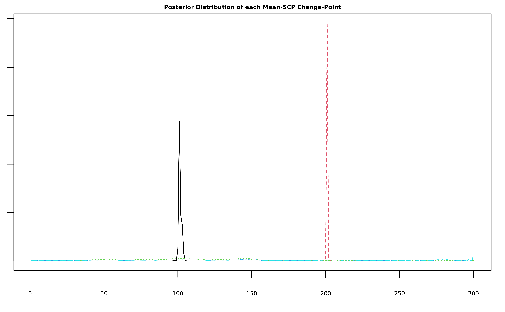

Basic Usage
The main function of the package is mich(), which takes
a vector or matrix of observations y and returns a
mich.fit object containing a variational approximation to
the posterior distribution of the change-points in the mean and/or
variance of y. The integer valued parameters
L, K, and J specify the
respective numbers of mean, variance, and joint mean and variance
change-points in y. In each of the examples below, we
sample a series with two changes in the mean and/or variance at times
101 and 201 and use mich() to
estimate and construct 95% credible sets around the locations of the
changes.
Mean Changes
# generate univariate data with two mean change-points
y = c(rnorm(100,0), rnorm(100,2), rnorm(100,0))
# fit two mean-scp components
fit = mich(y, L = 2)
summary(fit, level = 0.95)
#> Univariate MICH Model:
#>
#> ELBO: -242.324141949562; Converged: TRUE
#>
#> L = 2 Mean-SCP Component(s); 2 Detected Mean Change-Point(s):
#> change.points lower.0.95.credible.set upper.0.95.credible.set
#> 1 101 100 102
#> 2 203 198 207The summary output shows us the ELBO for the fitted model as well as
the estimated locations of the changes and the lower and upper bounds of
the level-level credible sets around each change. Because
we called mich() with L > 0, the returned
mich.fit object contains a named list
mean_model that contains the posterior parameters for each
of the L components in the model. The most important
element is pi_bar, which is a T x L matrix of posterior
change-point location probabilities (for a detailed description of each
element of mean_model, type ?mich in the
console). We can use pi_bar along with the function
mich_sets() to construct change-point estimates and
credible sets.
# MAP estimates with 95% credible sets
mich_sets(fit$mean_model$pi_bar, level = 0.95)
#> $cp
#> [1] 101 203
#>
#> $sets
#> $sets[[1]]
#> [1] 100 101 102
#>
#> $sets[[2]]
#> [1] 198 199 200 201 203 204 207The plot() function is extended to the
mich.fit class and uses mich_sets() to plot
the returned MAP estimates as well as the estimated signal if
signal == TRUE and credible sets if cs == TRUE
(note that as in the plot below, these truly are sets, not
intervals).
plot(fit, cs = TRUE, level = 0.95, signal = TRUE)
Variance Changes
# generate univariate data with two variance change-points
y = c(rnorm(100,0,10), rnorm(100,0,3), rnorm(100,0,6))
# fit two var-scp components
fit = mich(y, K = 2)
summary(fit, level = 0.95)
#> Univariate MICH Model:
#>
#> ELBO: -362.67485155576; Converged: TRUE
#>
#> K = 2 Var-SCP Component(s); 2 Detected Variance Change-Point(s):
#> change.points lower.0.95.credible.set upper.0.95.credible.set
#> 1 100 100 104
#> 2 201 196 201The posterior quantities are now stored in
fit$var_model$pi_bar.
plot(fit, cs = TRUE, level = 0.95, signal = TRUE)
Mean-Variance Changes
# generate univariate data with two mean-variance change-points
y = c(rnorm(100,0,10), rnorm(100,10,3), rnorm(100,0,6))
# fit two meanvar-scp components
fit = mich(y, J = 2)
summary(fit, level = 0.95)
#> Univariate MICH Model:
#>
#> ELBO: -220.537132456086; Converged: TRUE
#>
#> J = 2 MeanVar-SCP Component(s); 2 Detected Mean-Variance Change-Point(s):
#> change.points lower.0.95.credible.set upper.0.95.credible.set
#> 1 101 99 102
#> 2 201 199 201The posterior quantities are now stored in
fit$meanvar_model$pi_bar.
plot(fit, cs = TRUE, level = 0.95, signal = TRUE)
Multiple Change-Types
Note that by default L=K=J=0, so the call
mich(y) will fit the null model assuming no changes are
present in the mean or variance of y. It is also possible
to fit mich() with multiple kinds of changes, e.g. we could
rerun the last example with one of the changes misspecified as just a
mean change.
# generate univariate data with two mean-variance change-points
y = c(rnorm(100,0,10), rnorm(100,10,3), rnorm(100,0,6))
# fit one mean-scp component and meanvar-scp component
fit = mich(y, L=1, J = 1)
summary(fit, level = 0.95)
#> Univariate MICH Model:
#>
#> ELBO: -254.723737904752; Converged: TRUE
#>
#> L = 1 Mean-SCP Component(s); 1 Detected Mean Change-Point(s):
#> change.points lower.0.95.credible.set upper.0.95.credible.set
#> 1 101 86 103
#>
#> J = 1 MeanVar-SCP Component(s); 1 Detected Mean-Variance Change-Point(s):
#> change.points lower.0.95.credible.set upper.0.95.credible.set
#> 1 200 199 202We see that the model uses the mean-component to fit the first change and the mean-variance component to fit the second change.
plot(fit, cs = TRUE, level = 0.95)
Multivariate Mean Changes
In the case where y is a T x d matrix,
mich() can detect mean changes that are shared across all
or some of the columns. The columns of y do not need to be
independent and by default mich() will attempt to estimate
the precision matrix of the series (see the discussion of the
fit_scale parameter below). In the following example
y[,1] and y[,2] are positively correlated.
T <- 150
d <- 2
# covariance matrix
Sigma <- rbind(c(1, 0.7), c(0.7, 2))
Sigma_eigen <- eigen(Sigma)
e_vectors <- Sigma_eigen$vectors
e_values <- Sigma_eigen$values
Sigma_sd <- e_vectors %*% diag(sqrt(e_values)) %*% t(e_vectors)
# construct mean signal
mu <- c(-1, 2)
mu_t <- matrix(0, nrow = 70, ncol = d)
mu_t <- rbind(mu_t, t(sapply(1:30, function(i) mu)))
mu_t <- rbind(mu_t, matrix(0, nrow = 50, ncol = d))
# generate data
Z <- sapply(1:d, function(i) rnorm(T))
Y <- mu_t + Z %*% Sigma_sd
# fit two multivariate mean-scp components
fit = mich(Y, L = 2)
plot(fit, cs = TRUE, level = 0.95, signal = TRUE)
Selecting L, K, and J
In the previous section we treated the numbers of each kind of
change-point as known quantities, but more often than not we need to
estimate these parameters. One option is to set L,
K, and J equal to some large numbers that
upper bound each kind of change. For example if we think there are at
most five mean changes in the data then we can set
L = 5.
# generate univariate data with two mean change-points
y = c(rnorm(100,0), rnorm(100,2), rnorm(100,0))
# fit five mean-scp components
fit = mich(y, L = 5)
summary(fit, level = 0.95)
#> Univariate MICH Model:
#>
#> ELBO: -226.57173121568; Converged: TRUE
#>
#> L = 5 Mean-SCP Component(s); 2 Detected Mean Change-Point(s):
#> change.points lower.0.95.credible.set upper.0.95.credible.set
#> 1 101 100 103
#> 2 201 201 201
plot(fit, cs = TRUE, level = 0.95)
Note that the model still only detected the two true change-points.
The plot below shows that this is because the extra three components we
included have very diffuse posterior distributions that do not satisfy
the detection criterion of having credible sets containing fewer than
log(T)^2 indices (see Corollary 1 of Berlind, Cappello, and Madrid
Padilla (2025)).

Auto-MICH
Alternatively, we can use the ELBO as an approximation to marginal
likelihood of the model and automatically select the L,
K, and J that maximizes the ELBO. This option
is implemented in mich() via the L_auto,
K_auto, and J_auto parameters. If
L_auto == TRUE, then mich() searches for the
number of mean changes between L and L_max
that maximize the EBLO.
# fit mich with L selected automatically
fit = mich(y, L_auto = TRUE, verbose = TRUE, restart = FALSE)
#> [1] "(L = 0, K = 0, J = 0): ELBO = -304.942450777235; Counter: 6"
#> [1] "(L = 1, K = 0, J = 0): ELBO = -298.331456279222; Counter: 6"
#> [1] "(L = 2, K = 0, J = 0): ELBO = -211.047722355175; Counter: 6"
#> [1] "(L = 3, K = 0, J = 0): ELBO = -215.885482079647; Counter: 6"
#> [1] "(L = 4, K = 0, J = 0): ELBO = -220.962514999129; Counter: 5"
#> [1] "(L = 5, K = 0, J = 0): ELBO = -226.200102703732; Counter: 4"
#> [1] "(L = 6, K = 0, J = 0): ELBO = -231.558781723112; Counter: 3"
#> [1] "(L = 7, K = 0, J = 0): ELBO = -237.011609035981; Counter: 2"
#> [1] "(L = 8, K = 0, J = 0): ELBO = -242.541140918896; Counter: 1"
#> [1] "(L = 9, K = 0, J = 0): ELBO = -248.136597702824; Counter: 0"
#> [1] "Merging. Merge Counter: 1"
summary(fit, level = 0.95)
#> Univariate MICH Model:
#>
#> ELBO: -211.048798898986; Converged: TRUE
#>
#> L = 2 Mean-SCP Component(s); 2 Detected Mean Change-Point(s):
#> change.points lower.0.95.credible.set upper.0.95.credible.set
#> 1 101 100 103
#> 2 201 201 201Once again mich() is able to correctly identify the
mean-changes, but now setting L_auto == TRUE results in a
model with only two components.
plot(fit, cs = TRUE, level = 0.95)Similarly, if K_auto == TRUE or
J_auto == TRUE then mich() searches for the
optimal number of variance and mean-variance components to include in
the model. It is possible to have some combination of
L_auto, K_auto, and/or J_auto set
equal to true, in which case mich() takes turns
incrementing L, K, and J and
moves in the direction that results in the largest increase in the
ELBO.
# fit mich with L selected automatically
fit = mich(y, L_auto = TRUE, J_auto = TRUE, verbose = TRUE, restart = FALSE)
#> [1] "(L = 0, K = 0, J = 0): ELBO = -304.942450777235"
#> [1] "(L = 0, K = 0, J = 1): ELBO = -290.56141335325"
#> [1] "(L = 1, K = 0, J = 0): ELBO = -298.331456279222"
#> [1] "(L = 0, K = 0, J = 2): ELBO = -226.747670431813"
#> [1] "(L = 1, K = 0, J = 1): ELBO = -308.61486984484"
#> [1] "(L = 0, K = 0, J = 3): ELBO = -235.207021249792"
#> [1] "(L = 1, K = 0, J = 2): ELBO = -232.203193790049"
#> [1] "(L = 1, K = 0, J = 3): ELBO = -247.407027549628"
#> [1] "(L = 2, K = 0, J = 2): ELBO = -232.674862962078"
#> [1] "(L = 2, K = 0, J = 3): ELBO = -247.141610997682"
#> [1] "(L = 3, K = 0, J = 2): ELBO = -238.433249627662"
#> [1] "(L = 3, K = 0, J = 3): ELBO = -250.526457976407"
#> [1] "(L = 4, K = 0, J = 2): ELBO = -243.104705526495"
#> [1] "(L = 4, K = 0, J = 3): ELBO = -257.781771835369"
#> [1] "(L = 5, K = 0, J = 2): ELBO = -248.914056107144"
#> [1] "(L = 5, K = 0, J = 3): ELBO = -264.495764094317"
#> [1] "(L = 6, K = 0, J = 2): ELBO = -254.768484151035"
summary(fit, level = 0.95)
#> Univariate MICH Model:
#>
#> ELBO: -226.747670431813; Converged: TRUE
#>
#> J = 2 MeanVar-SCP Component(s); 2 Detected Mean-Variance Change-Point(s):
#> change.points lower.0.95.credible.set upper.0.95.credible.set
#> 1 101 100 103
#> 2 201 201 201
plot(fit, cs = TRUE, level = 0.95)
Lastly, mich() accepts the integer valued parameter
increment, which determines how many components are added
to the model as mich() searches for the best
L, K, and/or J, and
restart, which causes mich() to refit the
model from a null parameterization once the ELBO stops increasing, which
can help the variational algorithm escape local minima.
Priors
Prior Change-Point Location Probabilities
The priors for the change-point locations are controlled by the
pi_l, pi_k, and pi_j parameters
(each corresponding the the prior locations of mean, variance, and mean
and variance changes). By default these parameters are set equal to
"weighted", in which case the functions
log_mean_prior(), log_var_prior(), and
log_meanvar_prior() are used to calculated weighted priors
that ensure diffuse posterior distributions in the absence of any
changes in the mean and/or variance of y (see Appendix C.2
of Berlind, Cappello, and
Madrid Padilla (2025) for a detailed discussion). Setting
pi_l, pi_k, or pi_j equal to
"uniform" will force mich() to use the uniform
prior rep(1/T, T) instead. The user can also provide their
own priors by setting pi_l, pi_k, or
pi_j equal to a vector pi such that
length(pi) == length(y) and sum(pi) == 1, in
which case pi will be used as the prior for all of the
model components. pi can also be a matrix of probabilities
so long as nrow(pi) == length(y),
all(colSums(pi) == 1) == TRUE, and if
pi_l = pi then ncol(pi) == L and so on for
pi_k and pi_j.
Precision, Shape, and Rate Parameters
Each of the prior precision, shape, and rate parameters in the model
is set equal to 0.001 by default. The user can change these
parameters by modifying omega_l, u_k, v_k, omega_j, u_j and
v_j, but the sensitivity analysis in Berlind, Cappello, and Madrid
Padilla (2025) indicates that as long as these values are small,
they do not meaningfully alter the output of mich().
Standardization
When standardize == TRUE, mich() will
center and rescale the data before running the main variational
algorithm. While this step can help improve performance, because the
location of the first change-point is unknown, it does not guarantee
that y will begin centered at zero or have unit variance.
Instead, mich() estimates and returns an intercept
mu_0 and initial precision lambda_0 by default
(when y is a matrix, the estimated variance-covariance
matrix is returned instead as Sigma). If y is
known to be centered at zero or have unit variance, than the estimation
of these parameters can be avoided by setting
fit_intecept == FALSE and/or
fit_scale == FALSE.
Additonal Parameters
Additional control parameters can be viewed by typing
?mich in the console. These include the convergence
criterion tol, a verbose parameter that will
prompt mich() to provide feedback as it fits the model, and
a reverse parameter that will make mich() fit
to y[T:1] in place of y which can occasionally
improve the model fit.